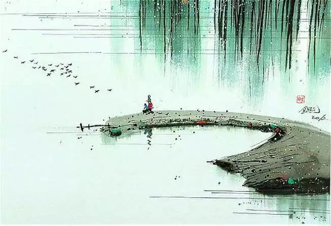
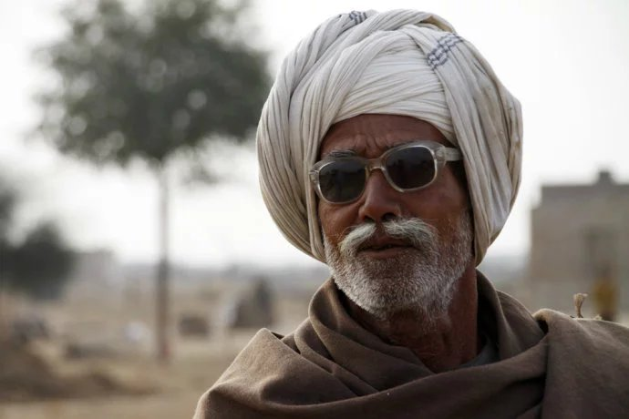
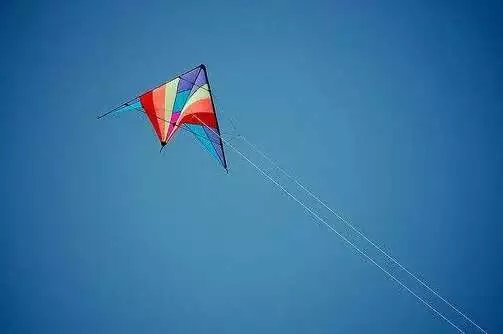

2017年1月4日：行到水穷处，坐看云起时。偶然值林叟，谈笑无还期。

2017年1月2日：不知道现在的抉择，以后会是什么样子。但，没有什么能够阻挡我去唤醒沉睡的梦。
2016年12月30日：所有的努力与挫折，只是为了让这里虚无缺一。从无始而来，终将归于虚无.从一而至，任万千繁复，终不过一捧黄沙。
2016年12月6日：曾经看过的青春，这一刻却出现了自己的青春里，shit 。。。

2016年11月24日：走过了，才知道生活是慢一步，要再慢一步，珍惜呵护来慢慢度过的。
2016年11月17日：为人 修身 修学 养性 。
2016年11月5日：那么简单，却那么伤心，那么坦荡，却不足以洒脱。

2016年10月29日：Non is ok : Ready to fresh tomorrow , yesterday is still persist , today is moving ahead and gazing ……
2016年10月16日：努力，只是为了成为你们认可的朋友……
2016年10月15日：遇到了时间，暂停了念想……
2016年10月4日：似乎这两天的孤寂，让我清清澈澈得到了现在的思绪：慌慌张张的用了3年的时间来磨合这个大学，迷迷糊糊的用了两年的时间重整了自己的生活。我觉得自己过去消极了2年，现在一下子找回了热情的自己，就像一座山，饶了一圈，回到了原点，看到了光明，看到了佛！这样的生活： 热情、狂野、信念、笃定，才是自己原本的真面孔。
2016年9月24日：不管情形多么糟糕，事情多么差，套路多么深刻，至少要带着基本的礼貌待别人（除了坏人），这才是一个有修养的人。
2016年9月18日：吃饭、睡觉、学习、备考、运动
2016年9月11日：人挪活 ，树挪死 ，穷则变 ，变则通 ，通则久 ，久则达 。 人丑就得多读书 ，但不能自我约束，自我限制 。
2016年9月6日：This is we the Friendship。妳若自愿墮落，我們便是路人;妳若和藹可親，我們依然相视而笑;同样，妳若努力進取，我愿与你至交。
完结